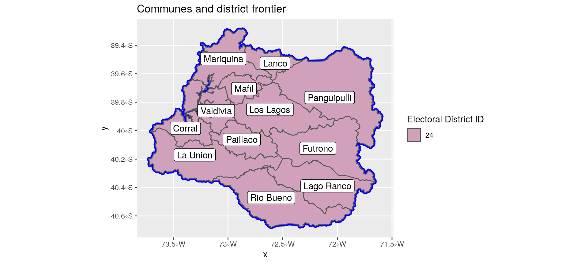
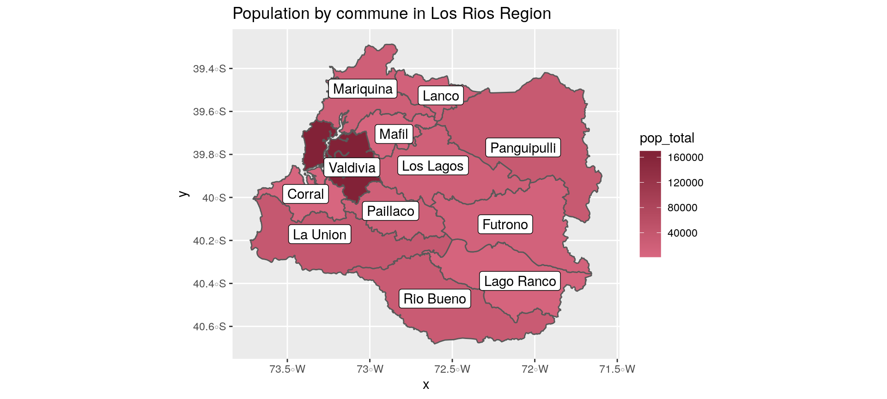
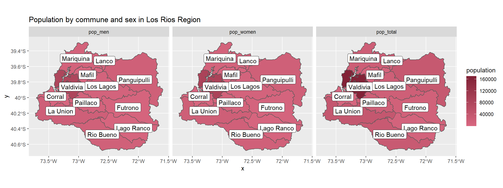
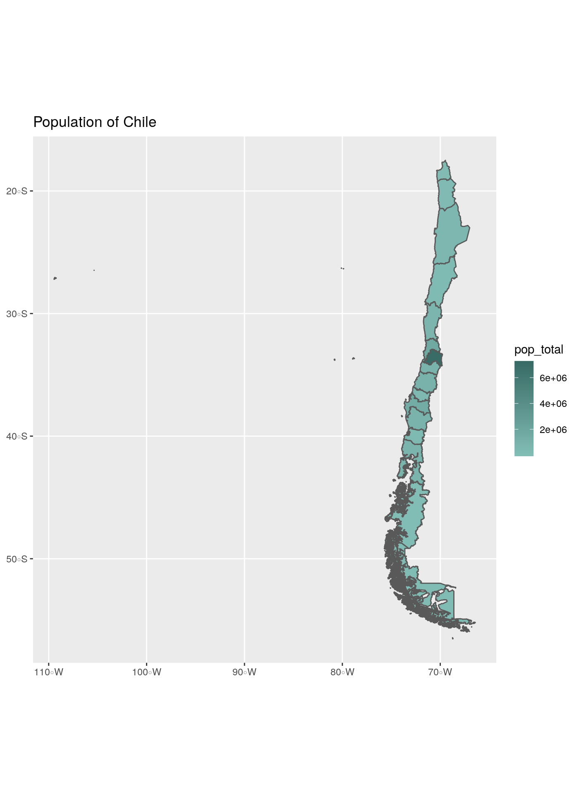
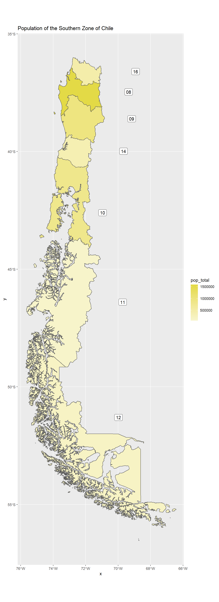
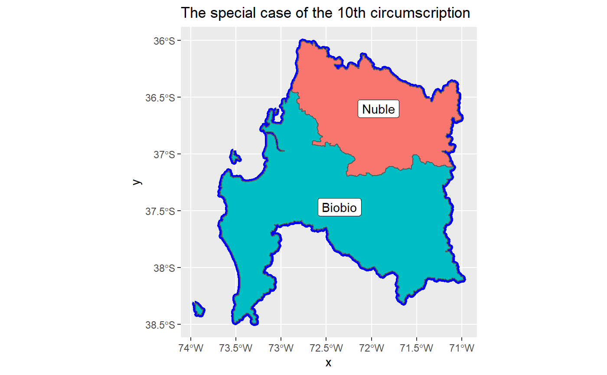
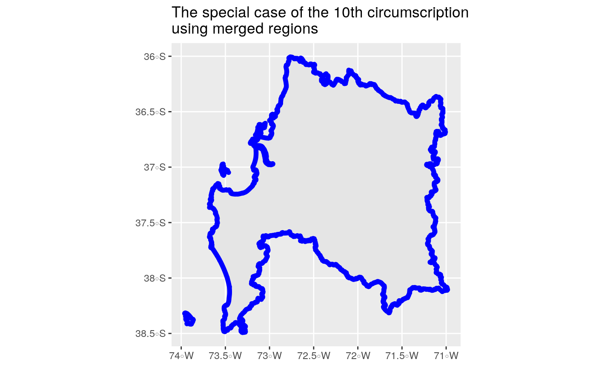

How to use this package
Mauricio Vargas S.
2019-12-02
basic-usage.RmdIntroduction
This package just provides datasets in sf format that you can use with ggplot2 package and other alternatives from base to shiny.
Simple example 1: Los Rios Region
library(chilemaps)
library(dplyr)
library(ggplot2)
colors <- c("#74c0e2", "#406662", "#8abdb6", "#d1a1bc")
r14_region <- regions_map[[14]] %>%
left_join(
territorial_codes %>%
select(region_id, region_name) %>%
distinct()
) %>%
mutate(color = colors[1])
ggplot(r14_region) +
geom_sf(aes(fill = color)) +
scale_fill_manual(values = r14_region$color,
labels = r14_region$region_name,
name = "Region") +
labs(title = "Los Rios Region")
Simple example 2: Provinces in Los Rios Region
r14_province <- provinces_map[[14]] %>%
left_join(
territorial_codes %>%
select(province_id, province_name) %>%
distinct()
) %>%
mutate(color = colors[2:3])
#> Joining, by = "province_id"
ggplot(r14_province) +
geom_sf(aes(fill = color)) +
geom_sf_label(aes(label = province_name)) +
scale_fill_manual(values = r14_province$color,
labels = r14_province$province_name,
name = "Province") +
labs(title = "Provinces in Los Rios Region")
Intermediate example 1: Electoral Districts in Los Rios Region
This example can be divided in three parts.
Just districts
r14_districts <- electoral_district_map[[14]] %>%
mutate(color = colors[4])
ggplot(r14_districts) +
geom_sf(aes(fill = color)) +
geom_sf_label(aes(label = district_id)) +
scale_fill_manual(values = r14_districts$color,
labels = r14_districts$district_id,
name = "Electoral District ID") +
labs(title = "Just districts")
Communes coloured by district
r14_districts_2 <- communes_map[[14]] %>%
left_join(
territorial_codes %>%
select(commune_id, commune_name) %>%
distinct()
) %>%
inner_join(electoral_division) %>%
mutate(color = colors[4])
ggplot(r14_districts_2) +
geom_sf(aes(fill = color)) +
geom_sf_label(aes(label = commune_name)) +
scale_fill_manual(values = r14_districts_2$color,
labels = r14_districts_2$district_id,
name = "Electoral District ID") +
labs(title = "Communes coloured by district")
Communes and district frontier
ggplot() +
geom_sf(data = r14_districts, color = "blue", size = 2) +
geom_sf(data = r14_districts_2, aes(fill = color)) +
geom_sf_label(data = r14_districts_2, aes(label = commune_name)) +
scale_fill_manual(values = r14_districts_2$color,
labels = r14_districts_2$district_id,
name = "Electoral District ID") +
labs(title = "Communes and district frontier")
Intermediate example 2: Population by commune in Los Rios Region
# taken from census, made light for the vignette
r14_population <- census_2017_communes %>%
filter(commune_id %in% communes_map[[14]]$commune_id)
r14_communes <- communes_map[[14]] %>%
left_join(
territorial_codes %>%
select(commune_id, commune_name) %>%
distinct()
) %>%
left_join(r14_population)
ggplot(r14_communes) +
geom_sf(aes(fill = pop_total)) +
scale_fill_gradient(low = "#d7667f", high = "#822237") +
geom_sf_label(aes(label = commune_name)) +
labs(title = "Population by commune in Los Rios Region")
Intermediate example 3: Population by commune and sex in Los Rios Region
library(tidyr)
library(forcats)
r14_communes_2 <- r14_communes %>%
gather(category, population, starts_with("pop_")) %>%
mutate(
category = as_factor(category),
category = fct_relevel(category, "pop_total", after = 2)
)
ggplot(r14_communes_2) +
geom_sf(aes(fill = population)) +
scale_fill_gradient(low = "#d7667f", high = "#822237") +
geom_sf_label(aes(label = commune_name)) +
labs(title = "Population by commune and sex in Los Rios Region") +
facet_wrap(~category, nrow = 1, dir = "h")
Advanced example 1: Population by region
To show the full country map I have to merge the list of regions.
census_2017_regions <- census_2017_communes %>%
left_join(territorial_codes) %>%
select(region_id, starts_with("pop_")) %>%
group_by(region_id) %>%
summarise_if(is.double, sum)
#> Joining, by = "commune_id"
regions_map_2 <- regions_map %>%
do.call(rbind, .) %>%
left_join(census_2017_regions, by = "region_id")
ggplot(regions_map_2) +
geom_sf(aes(fill = pop_total)) +
scale_fill_gradient(low = "#82bdb5", high = "#396c66") +
labs(title = "Population of Chile")
Advanced example 2: Population by region in the southern zone
regions_map_3 <- regions_map_2 %>%
filter(region_id %in% c(paste0("0",8:9),10:12,14,16))
ggplot(regions_map_3) +
geom_sf(aes(fill = pop_total)) +
scale_fill_gradient(low = "#f7f4ca", high = "#e3da46") +
geom_sf_label(aes(label = region_id), nudge_x = 3) +
labs(title = "Population of the Southern Zone of Chile")
Advanced example 3: Merging shapes
Under the electoral law, Biobio and Niuble together create the tenth circumscription. Let’s see this with a map.
district_10 <- rbind(regions_map[[8]], regions_map[[16]]) %>%
left_join(
territorial_codes %>% select(region_id, region_name) %>% distinct()
)
ggplot() +
geom_sf(data = electoral_circumscription_map[[8]], aes(), color = "blue", size = 2) +
geom_sf(data = district_10, aes(fill = colors[1:2])) +
geom_sf_label(data = district_10, aes(label = region_name)) +
labs(title = "The special case of the 10th circumscription") +
theme(legend.position = "none")
To create the circumscription shape you can merge regions or districts.
library(rmapshaper)
district_10_reg <- rbind(regions_map[[8]], regions_map[[16]]) %>%
mutate(circumscription_id = "10") %>%
ms_dissolve(., "circumscription_id")
district_10_dis <- rbind(electoral_district_map[[8]], electoral_district_map[[16]]) %>%
mutate(circumscription_id = "10") %>%
ms_dissolve(., "circumscription_id")
ggplot() +
geom_sf(data = district_10_reg, aes(), color = "blue", size = 2) +
labs(title = "The special case of the 10th circumscription\nusing merged regions") +
theme(legend.position = "none")